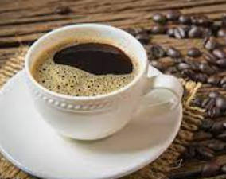

A Coffee Shop
Our Heritage Our story begins in 1971 along the cobblestone streets of Seattle’s historic Pike Place Market. It was here where Starbucks opened its first store, offering fresh-roasted coffee beans, tea and spices from around the world for our customers to take home. Our name was inspired by the classic tale, “Moby-Dick,” evoking the seafaring tradition of the early coffee traders. Ten years later

123456-789 Boston 42
Back Bay, MA 54210
1-888-555-55555